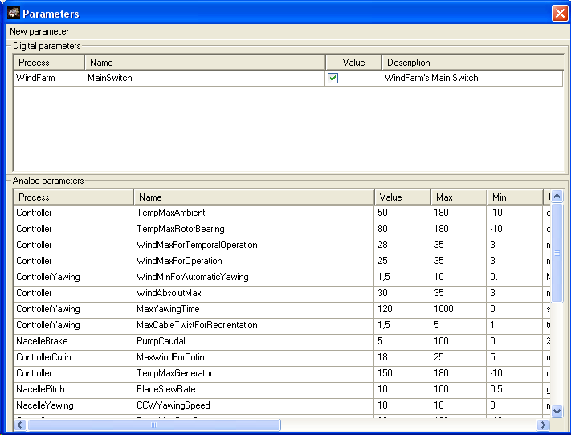

Parameters synoptic
This synoptic is used to see and modify the Parameters used in the application.

Parameters behave as output signals: think of them as generator of fixed values, both analog or digital.